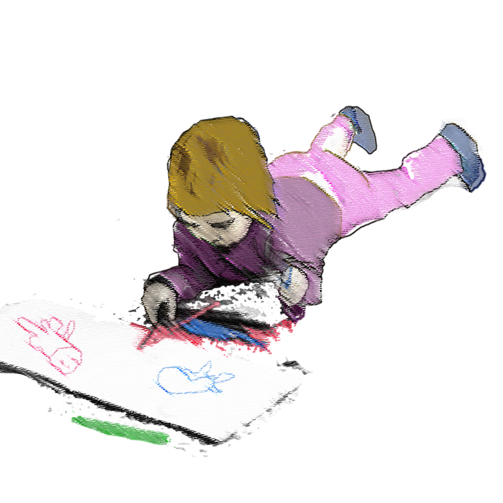
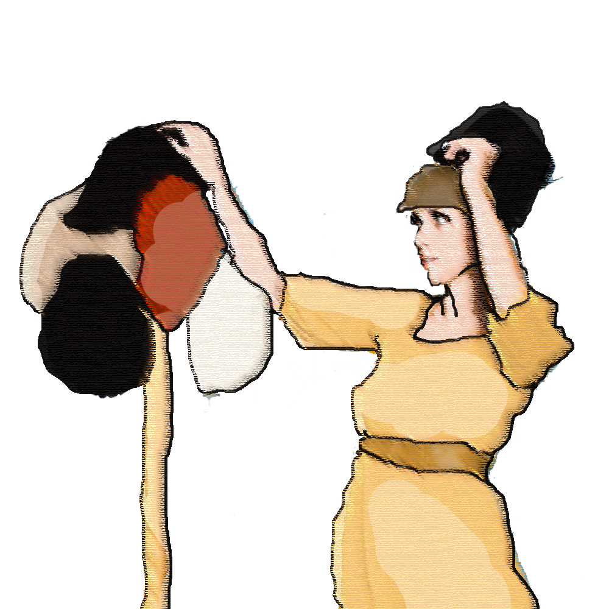
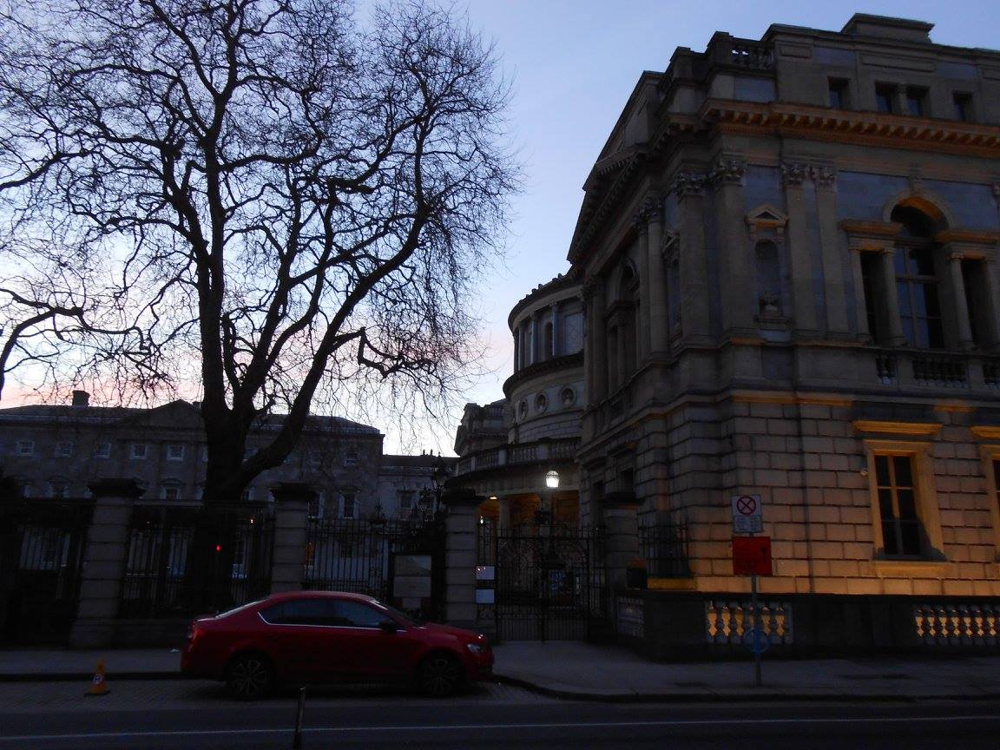
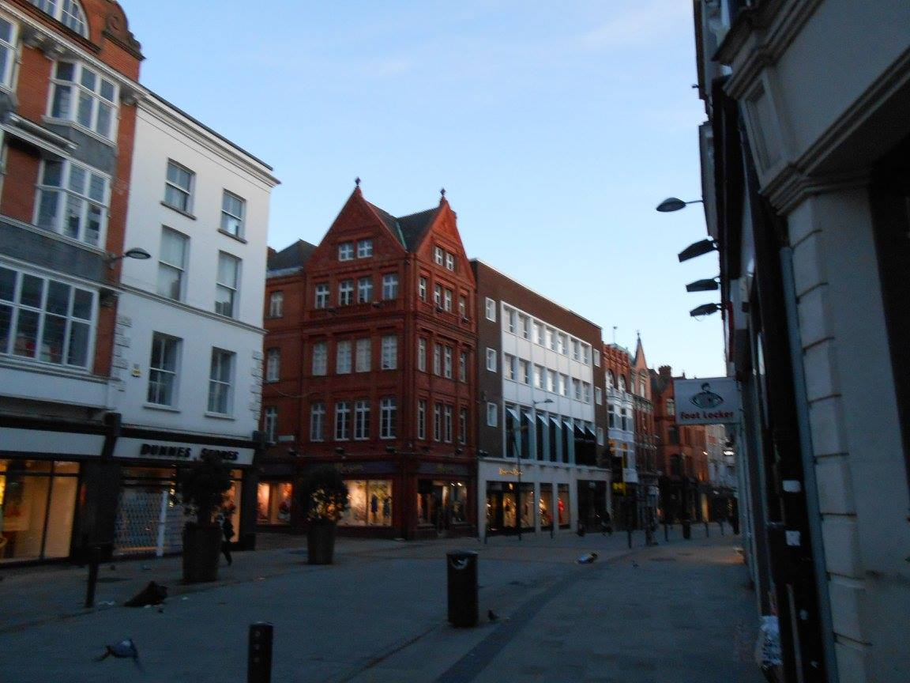
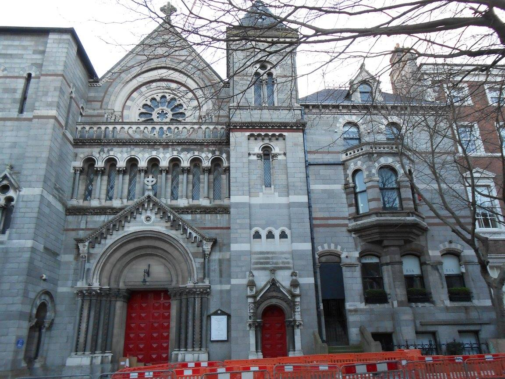
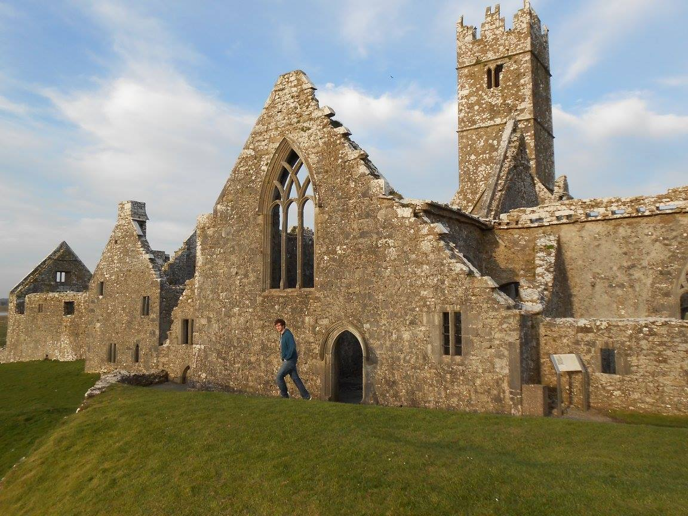

Making the First Move
Career
3 November 2017
I started drawing when I was 3 or 4. Before I could even read or write. I blame it on a mother who painted on all the furniture in the house. Plus, my parents were very religious, and they chose a church that required three hours of Sabbath Day Service. I probably started drawing because being 'reverent' was a hard feat at that age. And even drawing didn't curb my energy much.
I continued to draw all through middle and high school. I dreamed of a life of being a comic book artist or a manga ka. I graduated from a small high school with a few awards I had earned from various art competitions. I thought being top 10 in a graduating class of 250 made me smart. I was going to go to college, become an animator, and be one of the few artists in the world who became famous through their work. Did I mention I was also going to make at least six figures?
None of that happened. I went to college, sure. In fact, I got an associates at a local college and a bachelor's at a private university. By the time I graduated with a degree, I'd been given a few doses of reality. One professor told me my art was "too girly" and that it couldn't compete in a man's world. Another suggested that I become an art therapist instead of an artist. Ultimately, though, it was my own ambition that changed me. I hated the animation classes I took. I hated the assignments and how competetive it was, but I loved the software. I learned to use Audacity to make a sound art project for my New Genre class. I learned Photoshop and Illustrator and Dream weaver for a Net Graphics class. All the while convincing myself that sculpture was my path, I watched the graphic design majors using InDesign with interest. Five years and a lot of money later, I proudly showed off my ceramics degree. I paid for that with meals of ramen, horrible part-time jobs, and missed family holidays. Surely it was worth a job, right?
No. Careers don't work like that. We either make ourselves marketable, or we change the market. Or we just do what we love and learn to live poor. For me, I found a passion in learning. Making myself more marketable was the most appealing option. I tried to learn carpentry so I could make furniture. And when that didn't pay off, I took a course in electrical work. I would be an electrician, and bring a valuable service to every family's life. Nope, turned out that that path took as long as getting a degree and required a ton of travel. While working yet another dead-end job, I realized I needed to change my thinking. I didn't want a job. I had proven I could get a job. I have experience working retail and assembling furniture and taking care of handicapped people. No, what I wanted was a career that I could do the rest of my life.
Luckily, I married a man who is smarter than I am. He suggested that I invest my time differently. That I learn how to do projects for myself first and a job after. My mother suggested that I treat a career as a life-long process instead of a get-rich-quick scheme. What would I want to do at 60 years of age? Turns out my mother's good at giving advice.
So I started learning to code. When I picture my life, I want to help businesses and customers connect. I want to be able to do the best job I can from anywhere in the world. I want to be able to support my family and my community. I want to be my best self while helping others in their work. I want to provide seamless user experience, accessibility, and great design to projects I'm passionate about. I'm still brand new... I only know HTML and CSS... barely. But I made this website. And that's something.
Photo Credit: @grohsfabian and @brookecagle on unsplash.com, alamy stock photo
Ireland: My Dream Vacation
Travel
30 March 2017
Planning our trip to Ireland, I had a few reservations. I expected it to be wet and rainy the whole time we were there. I also expected that once we got out into the country, we might find all the green fields a bit dull. Don't get me wrong. I have been wanting to go to Ireland since I first found out my mother was born in Belfast. However, dragging my history buff husband along was a different story. I worried that he wouldn't have a good time, because Irish history isn't quite as exciting as German history. And, after seeing pictures of all the green fields and old ruins, why would you want to pay so much to see it yourself?
All my worries were for naught. Ireland granted us with the finest sunny weather for six whole days of our trip. March is not the best tourist season to go, but we got so lucky at every turn. The only day it rained was on our last day, and it stopped as soon as we needed to take pictures. Learning to drive on the left provided quite a lot of excitement even when we were out in the country, and there wasn't a dull moment to be had. The untamed majesty of all that Ireland has to offer and the hidden beauty of random ruins makes a truly breathtaking exploration. I could see all the pictures in the world, but I could never absorb as much as I have by going there.
Sadly, this means that all the photos I will now post of my trip are a cheap imitation of all that I beheld. However, since my memory is terrible, I took the photos anyways. Our first city was Dublin, and driving there was terrifying. Lots of people, small cobblestone lanes, and of course I'm using American spatial awareness to drive in a European way (i.e. I must stop driving over the left curb).
  Dublin was a fantastic city to start with. We were our most energetic by this point, and boy did we need it. In the two days we were there, we clocked at least 15 miles of walking. We saw everything from Trinity college to the Jameson whiskey distillery to the Halfpenny Bridge. Dublin was the part of our trip with the most hustle and bustle. We had to plan what we were going to do in order to see everything we wanted.We stayed in a hotel right in the city center, and we overlooked the streets of Dublin and the National Museum. My favorite part of Dublin were all the churches and the beautiful architecture.
Our next town was Belfast, and we spent two days here as well. While nowhere near as big and luxurious as Dublin, our hotel room was on the 6th floor this time, and the skyscrapers were much more pronounced. We really didn't spend too long in the city center. By this point, we were itching to see the coast. We used the opportunity to see the Giant's Causeway and Dunluce castle. While we were in Belfast, we tracked down some given addresses, and we went to the Titanic Museum. We were fascinated by the long history with the sea that Belfast has. From building the SS Titanic and all her other White Star Line sisters (the Nomadic is the only one still ship-shaped today) to having an entire industry around harvesting sea kelp, we learned a lot about how much of a port town Belfast really is.
On the way to Donegal, we used the opportunity to take a slow romp around the small towns and ruins of a bygone era. We saw everything from a working Sanctuary island to the green sheep hills. We ate what seemed to be the magical pairing of a cod and a donut at a place called Flash in the Pan. Then all my princess fantasies came true, and I got to stay the night in a magical fairy castle! At the castle, we explored the Lake nearby, ate the most expensive food we've ever paid for, and steered clear of all the bottled beverages in the mini fridge. 5 euro for 8 ounces of orange soda? King George would spit! Our luxury suite came complete with a bellhop, a wing-backed brocade couch, a closet with very expensive robes, and a deep soak tub. After a day of political intrigue and beheadings, isn't it nice to just relax?
After we said goodbye to Lough Eske, we headed straight south for Galway, another coastal city. On the way, we saw some of the best parts of our trip. At the town of Belleek, the finest porcelain is used to make "china weave" baskets and other beautiful home decor. And we got to see the best coastal view in all of Ireland. The coolest thing we came across was this old friary built in 1351. We had loads of fun exploring it, and no one was there!
Ultimately, we made it to Galway and spent a relaxing night on the beach. Our hotel had an oceanfront view, and we listened to the waves while eating fish and chips. On our last morning in Ireland, I dipped my feet in and watched men jump into just-slightly-less-than-frigid water. Our final destination was the town of Sword, just outside Dublin. The hotel was pretty close to the airport, so we knew this would be our final goodbye to Ireland. Luckily, we went out with a bang. Situated a far distance from any freeway sits the quiet town of Trim. The Castle of Trim is the largest and best-preserved Anglo-Norman castle in Ireland. It sits on 30,000 square meters of land. I think this was Randy's favorite part of the trip. Far from being very educational about the relationship of King Henry II and his Norman lords, this castle was integral to Mel Gibson in Braveheart. He used it in four different scenes. William Wallace, ironically, never traveled to Ireland.
However, Randy and I learned from Wallace's mistake. Between the supreme customer service, the joyful shopkeepers, and the excellent complimentary breakfasts, Ireland truly was the trip of a lifetime. We couldn't have asked for better weather or more Irish butter. In every way, Ireland not only exceeded my expectations, but it surprised me. It surprised me by changing from pounds to euros halfway through the trip. It surprised me by allowing 100 km/hr on roads that should be 60 km/hr. And it surprised me in its use of modern innovation against a backdrop of ancient history. Every town has history, and most towns have a castle ready to pop out of the landscape and wave at you. We are so excited that we bit the bullet and went on this trip. We don't regret it for a second! Slan.
For more trip pictures, visit my Facebook page! Thanks so much to Exploring Vacations agency for planning and booking our trip - money well spent! I was inspired to design an agency site... see below